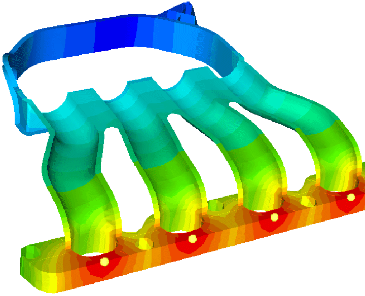
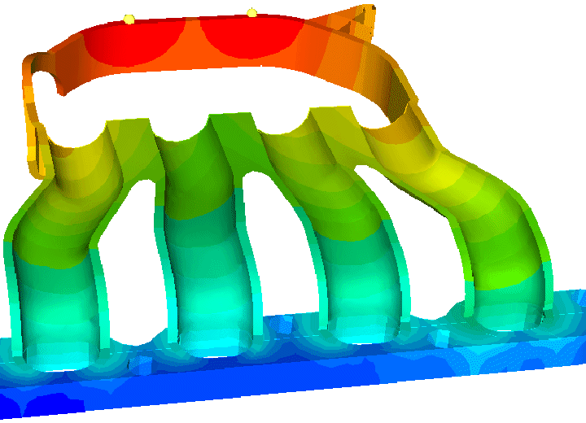
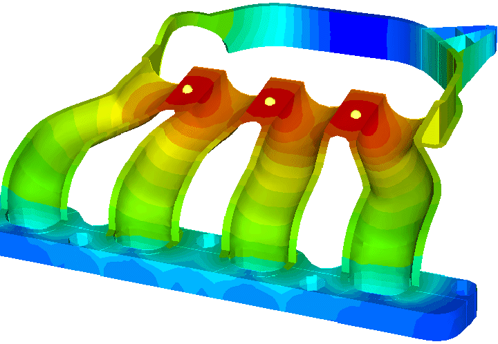
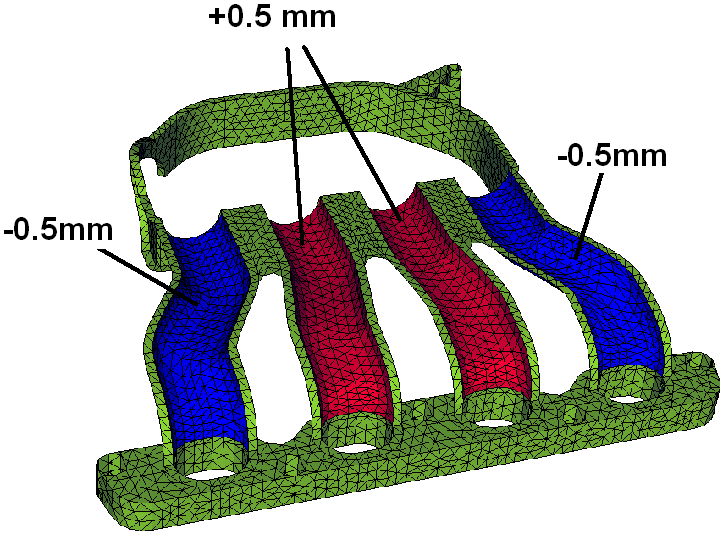
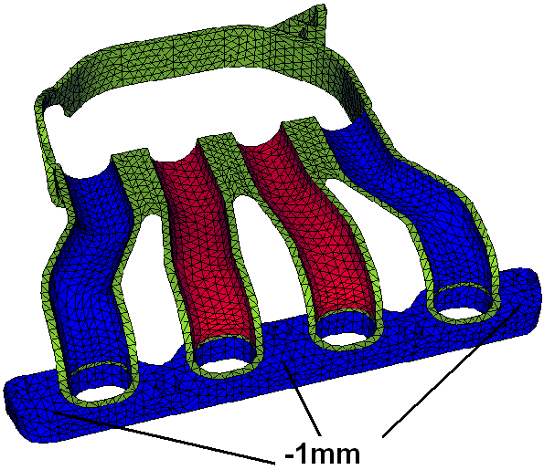

|
Sonuçlarý incelersek;
Enj. Basýncý
[MPa] |
Hava Boþluðu |
Çarpýlma
[mm] |
42 |
Yok |
1.9 |
37 |
Yok |
2.2 |
33 |
Yok |
4.3 |
Tablo 1: Birinci parça analiz sonuçlarý
Sonuçlar incelendiðinde birinci alternatifin sorunsuz bir þekilde imal edilebileceði ve en düþük çarpýlma miktarýna sahip olduðu görülmüþtür.
Diðer tüm parçalar için de ayný adýmlar uygulanýp en az çarpýlma miktarýna sahip imalat þekli seçilecektir.
Manifold için kullanýlacak ikinci parçanýn farklý plastik giriþi alternatifleri aþaðýdaki gibidir



Þekil 18: Ýkinci parça plastik giriþ alternatifleri
Sonuçlar incelenirse;
Enj. Basýncý [MPa] |
Hava Boþluðu |
Çarpýlma [mm] |
57 |
Yok |
5.2 |
74 |
Yok |
4.6 |
59 |
Yok |
4.4 |
Tablo 2: Ýkinci parça analiz sonuçlarý
Sonuç tablosuna bakýldýðýnda plastik malzemenin giriþ noktalarý deðiþtirilerek elde edilebilecek en düþük çarpýlma miktarýnýn 4,4mm olduðu görülür ki bu deðer bu tip bir imalar için çok yüksektir. Bu durumda plastik malzeme giriþ noktasýný deðiþtirmek dýþýnda çözümler düþünülerek çarpýlmanýn minimuma düþürülmesi gerekmektedir ve ilk baþvurulacak çözüm model geometrisi üzerinde et kalýnlýklarýnda deðiþiklik yapmaktýr.

Þekil 19: Parça kalýnlýklarýnýn deðiþtirilmesi
Yapýlan bu deðiþiklik sonucunda parçadaki toplam çarpýlma miktarý 4,4mm'den 3.7mm'ye düþmüþtür fakat 0,7mm olarak gerçekleþen bu düþüþ bizim için yeterli deðildir.

Þekil 20: Parça kalýnlýklarýnýn deðiþtirilmesi
|